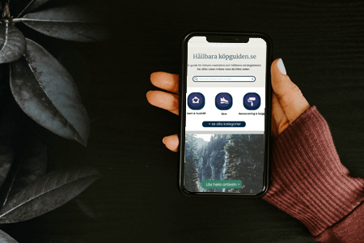
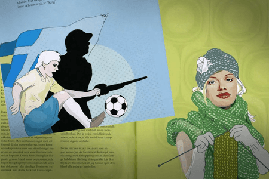

Hej där, och välkommen till min
UX portfolio
Jag heter Kristin - digital grafisk designer som mitt i karriären också valde en
rejäl kompetensutveckling inom UX.
Jag har förälskat mig i Design thinking, digital tillgänglighet, problemlösning, UX research, UI och prototypande. Jag gillar också kod och har byggt min portfolio i VSCode .
Jag har förälskat mig i Design thinking, digital tillgänglighet, problemlösning, UX research, UI och prototypande. Jag gillar också kod och har byggt min portfolio i VSCode .
UX projekt:

UX Case study - Hållbara köpguiden
Produktutveckling och UX research av MVP för sajt som gör hållbar konsumtion enklare.
Tidigare erfarenhet:

Marknadsföring & kampanjer
Digitala kampanjer, korta filmer och annonser i tidigare roll som medieproducent.

Illustrationer
Illustratörsjobb som frilans.